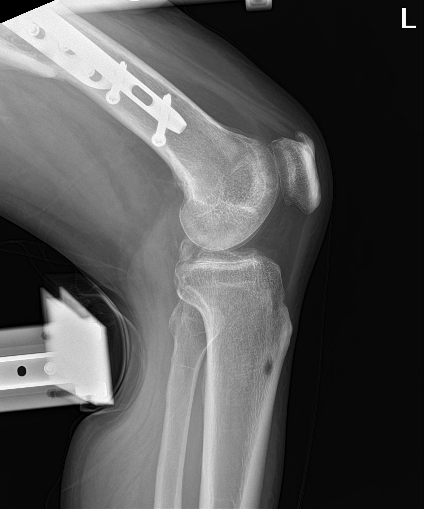

StressX Decription
Our platform uses stress radiographs to estimate side-to-side differences in posterior tibial displacement (PTD) between the injured knee and the contralateral uninjured knee, a common method for quantifying posterior instability. It also provides an estimate of the side-to-side difference in anterior tibial displacement (ATD) between the injured knee and the contralateral uninjured knee, which is a common way to quantify anterior instability.

For posterior tibial displacement (PTD), measurements were performed using PCL drawer view 90-degree x-ray radiographs, and for anterior tibial displacement (ATD), measurements were performed using ACL drawer view 120-150 degree x-ray radiographs. As a standard for length, the front cushion of the pressure part of the Telos stress device was used.
StressX User Guide
1. Select
- 분석하고자 하는 X-ray의 종류 (PCL, ACL)에 따른 분석을 선택합니다.
2. Image Upload
- 분석 화면 웹 페이지 좌측 box 상단에 위치한 Image Upload 버튼을 클릭합니다.
- 팝업된 창에서 PCL의 경우, 90˚로 측정된 PCL drawer view X-ray 이미지를 선택합니다. ACL의 경우, 120˚-150˚ 사이로 측정된 ACL drawer view X-ray 이미지를 선택합니다.
- 이미지가 선택되면 웹 페이지의 좌측 box에 미리보기가 표시됩니다.
3. Analysis
- Image Upload 과정이 끝났으면, Analysis 버튼을 클릭합니다.
- 분석이 시작되면 화살표 상단에 Analyzing이 표시되고 Analysis Completed가 나올 때까지 기다립니다.
4. Result
- 분석이 완료되면 웹 페이지 우측 box에 예측 결과 이미지가 표시됩니다.
- 중앙 하단에 결과값 (ATD, PTD)이 mm 단위로 표시됩니다.
- 결과 데이터가 필요한 경우, Prediction Image Download 혹은 Result CSV Download를 통해서 다운받을 수 있습니다.
5. Reset
- 분석을 다시 시작하거나 다른 영상 이미지를 선택하려면 Reset 버튼을 클릭합니다. 이 버튼을 클릭하면 분석화면 웹 페이지가 초기 상태로 돌아갑니다.